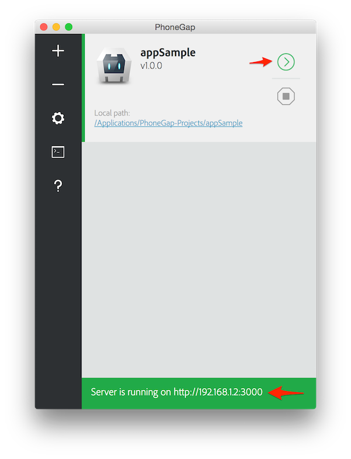
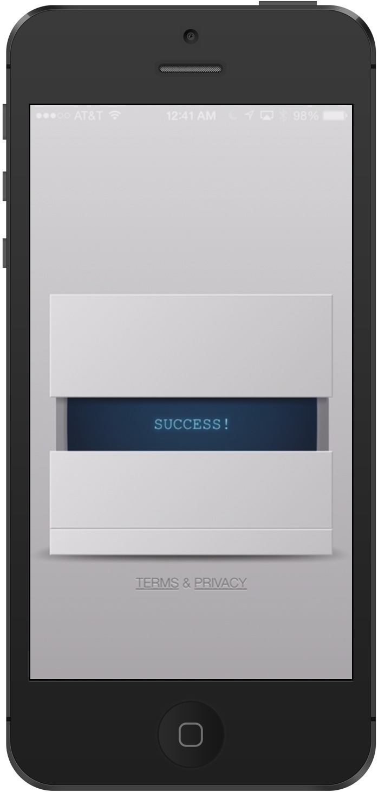

Tutorial
Para começar a usar a aplicação do PhoneGap para o desktop que oferece uma interface de "drag and drop" para criar os aplicativos, você vai precisar baixar o instalador para o seu sistema operacional, quando o download for concluido se você estiver usando Mac OS X dê um clique duplo no arquivo baixado para rodar o instalador, você vai ser abordado por um termo de licensa de uso para aceitar.

Então puxe e arraste a aplicação na pasta "Applications" no seu Mac.
Se você estiver usando Windows, dê um clique duplo no arquivo baixado para rodar o instalador, vai aparecer o Phonegap Desktop Setup Wizard, aceite os termos de uso.

Selecione o destino desejado para a aplicação e cique em "Next", selecione o local desejado para o atalho e clique em "Next", clique em "Install" para começar a instalação depois clique em "Finish" para fechar o Setup.
Para visualizar e testar a aplicação sem nenhuma plataforma adicional de SDK no seu mobile você precisará baixar "The PhoneGap Developer App". Ela automaticamente oferece acesso para as APIs do Phonegap oferecendo também acesso instantâneo para o dispositivo nativo sem ter que instalar nenhum outro plugin ou compilar algo localmente. O objetivo é fazer com que o desenvolvedor possa começar a criar e testar suas aplicações PhoneGap rapidamente com o menor Setup. Para instalar o aplicativo da Phonegap de graça clique em um dos mercados de apps(ITunes | Google play | Windows Phone Store).

Quando instalado, toque no ícone da aplicação baixado em seu dispositivo móvel para abrí-lo.
Agora que você instalou o Phonegap Desktop e/ou Phonegap CLI no seu computador ou no seu dispositivo móvel. Este projeto terá a habilidade de rodar em multiplos dispositivos e sistemas operacionais.
A ferramenta Phonegap desktop inclui um projeto Hello World padrão para iniciantes. Clique no sinal de mais e selecione "Create New Project"/"Phonegap Project", uma tela pedindo informações sobre seu projeto irá aparecer. Escolha o caminho no seu HD onde você quer criar seu projeto, com um nome designado e um indentificador opcional.Uma vez que a informação for colocada, clique no botão verde "Create Project" (Tenha cuidado que o campo ID também é conhecido como "package identifier" para android e "bundle identifier" para iOS).Você deverá ver o endereço do servidor indicando que está rodando e o projeto ativo.Apenas um projeto estará ativo e rodando por vez.
Você pode usar o Phonegap Developer app pairado com o Phonegap desktop para visualizar imediatamente as mudanças sem instalar plataformas SDKs, registrar dispositivos ou compilar código.
PhoneGap Desktop inicia um pequeno servidor web para hospedar seu projeto e retorna um endereço de servidor que permitirá você entrar pelo seu mobile ou pelo seu navegador web. O projeto é disponibilizado automaticamente quando o projeto é criado, mas você pode também iniciar manualmente qualquer projeto inativo clicando no botão verde.
Para visualizar sua aplicação vá para o seu mobile onde o Phonegap app estiver rodando, entre com o endereço do servidor na tela principal e toque em "Connect", você conectará e verá uma mensagem de sucesso. Se você receber um erro de qualquer tipo, tenha certeza de que os dois dispositvos utilizados tanto o mobile quanto o computador estejam conectados na mesma internet. Quando conectado vai carregar e mostrar sua aplicação.
Para fazer uma atualização abra o arquivo index.html (localizado em ~/nome/www/index.html) no seu editor de texto, edite algo salve e vá para seu mobile para ver o resultado.